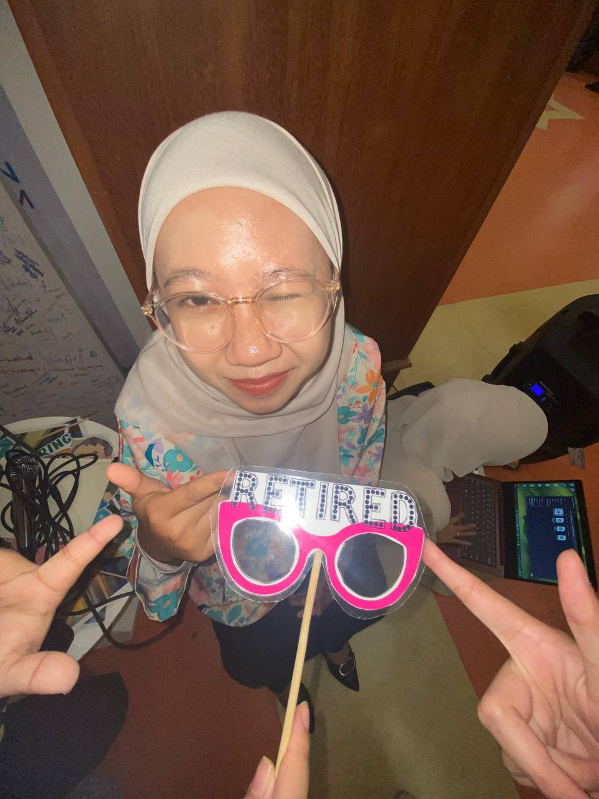
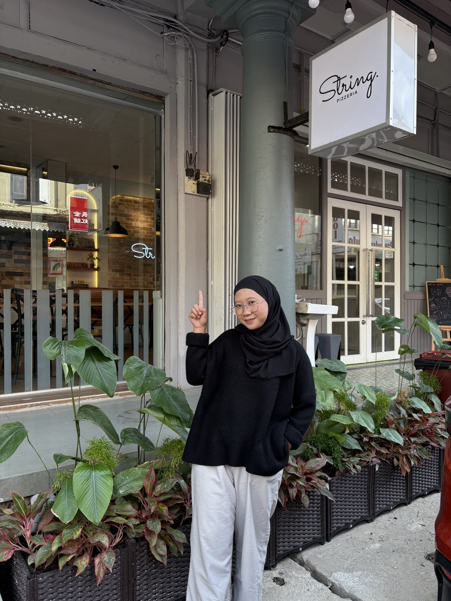
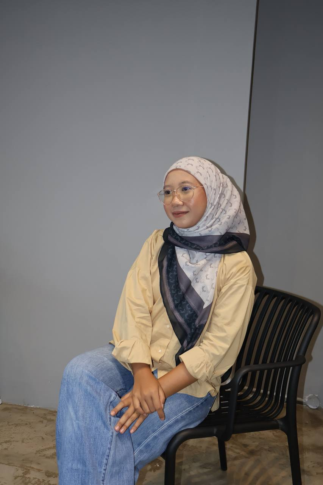

Hello ! My name is Fasya Najwa Sha'ari. This is my personal website tells about my journey. I am 21 years old. I am the youngest over 3 siblings and i came from Semenyih, Selangor. I am a final-year student that currently studying in semester 5 at Universiti Teknologi Mara (UITM) pursuing a Diploma in Information Management with a major in the Faculty of Computing, Informatics, and Mathematics.
  